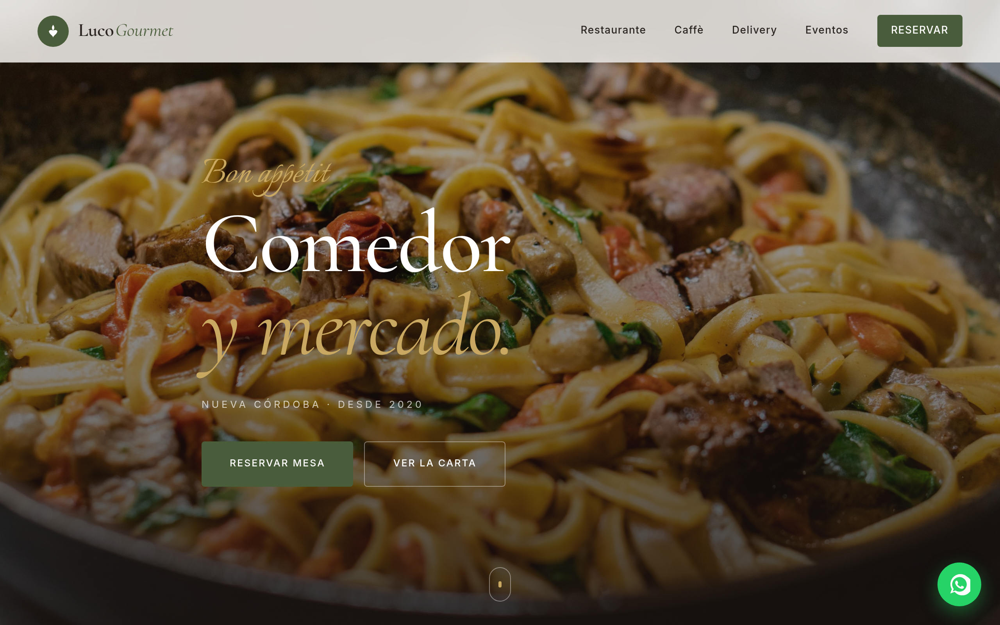

Luco Gourmet
Visit live site
El proyecto
Luco Gourmet es un comedor y mercado gourmet ubicado en Nueva Córdoba. Tenían menú en PDF, cero presencia orgánica en Google y dependían 100% de su clientela habitual para llenar el salón.
El desafío: construir un sitio que apareciera en búsquedas locales ("comedor nueva córdoba", "almuerzo córdoba"), que el menú fuera accesible offline y que los clientes pudieran hacer reservas sin llamar.
El problema
PDF de menú que no actualizaban hace 3 meses. Sin SEO local, sin Schema.org, sin presencia en Google Maps. El teléfono como único canal de reserva generaba carga operativa y consultas duplicadas sobre horarios y precios.
La solución
PWA con menú editable por el dueño (JSON), Service Worker para acceso offline, Schema.org Restaurant con horarios, dirección y menú estructurado. Formulario de reserva con confirmation por email. Cache-first para assets estáticos, network-first para el menú JSON.
Decisiones técnicas
PWA completa
Service Worker con estrategia cache-first para CSS/JS/fuentes e imágenes, y network-first con fallback offline para el menú JSON. manifest.json con iconos 192/512 maskable. Install prompt custom.
Schema.org Restaurant
JSON-LD con Restaurant, OpeningHoursSpecification, Menu, GeoCoordinates y AggregateRating. Rich results validados en Google Search Console.
Performance extrema
Critical CSS inlineado en <head>. Font preload para Inter 400/500. Imágenes en AVIF + WebP + JPEG fallback con <picture>. Total page weight <200KB. LCP <900ms en 3G lento.
Menú actualizable
Menú almacenado en menu.json versionado. El dueño edita un archivo, hace push, Netlify redeploya en 30s. Sin CMS, sin suscripción mensual, sin interfaz que romper.
SEO local
Titles y descriptions únicos por sección. Google Business Profile linkado. Sitemap con priority diferenciada. Core Web Vitals en verde según PageSpeed Insights (field data).
Formulario de reservas
Netlify Forms con honeypot anti-spam. Validación HTML5 + JS custom. Notificación email al dueño + auto-respuesta al cliente. Sin backend, sin costo adicional.